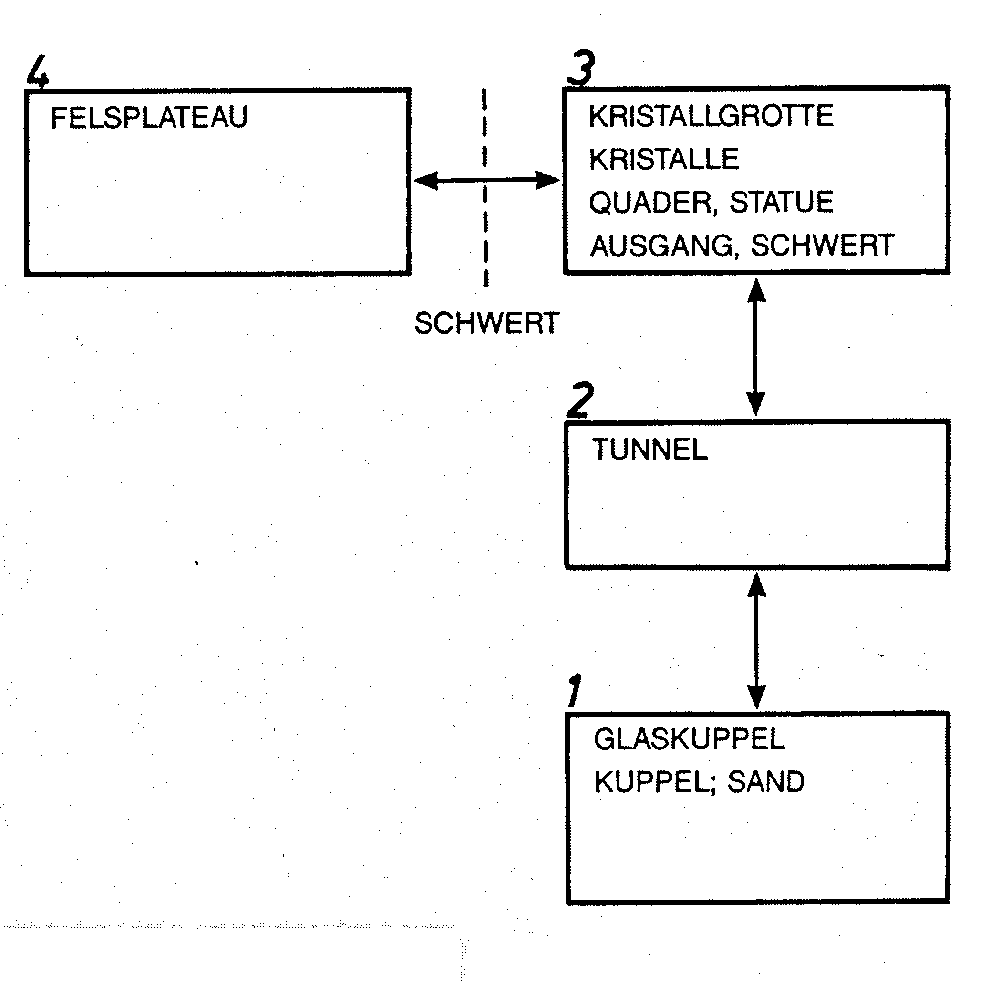
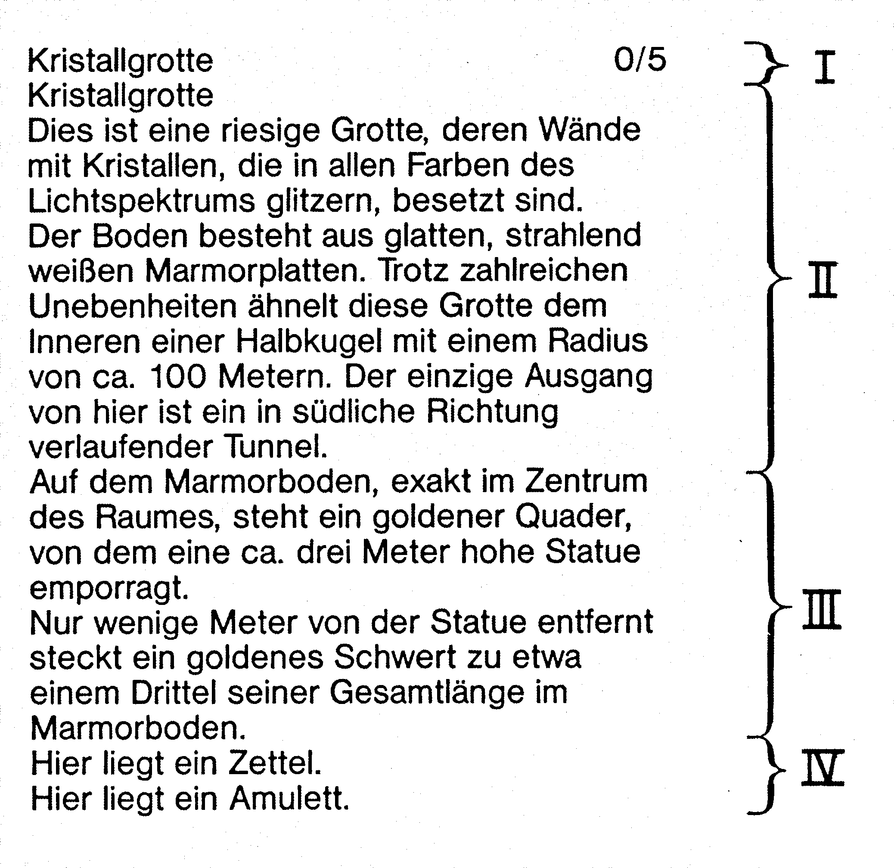

Adventure-Programmiertechnik
Es ist soweit. Im nun folgenden Abschnitt erfahren Sie endlich, wie man sie programmiert: Super-Adventures, wie es sie bis jetzt noch nicht gibt. Sie erhalten alle notwendigen Grundlagen, um professionelle Adventures zu erstellen.
In meinem ersten Adventure-Kurs habe ich bereits ausführlich beschrieben, wie man eine Adventure-Idee aufgreift, diese ausarbeitet, Pläne anfertigt etc. Wir wollen uns deshalb hier gar nicht mehr erst lange mit solchen Grundlagen aufhalten, sondern gleich zur Sache kommen. Auf den nächsten Seiten programmieren wir gemeinsam die ersten Fortsetzungsszenen von Gordon Saga II. An dieser Stelle muß ich auch gleich noch einmal ein paar Worte zur Gordon Saga I verlieren. Ich möchte mich bei allen begeisterten Adventurern bedanken, die im Spiel mit mühevoller Kleinstarbeit meine Telefonnummer herausgefunden und mich dann angerufen haben. Ich erhielt zahlreiche Anrufe aus allen Teilen Deutschlands, Österreichs und der Schweiz. Bedanken möchte ich mich vor allem deshalb, weil ich bisher keinen einzigen bösen Anruf erhielt. Einige teilten mir sogar mit, daß das Spiel Fehler enthält und deshalb nicht lösbar sei. Es stimmt, es sind einige Fehler enthalten, aber ich kann versichern, daß diese Fehler in keinster Weise zur Unlösbarkeit beziehungsweise zum Absturz des Spiels führen: es sind lediglich kleine Logikfehler, wie sie bei der Programmierung eines komplexen Adventures unvermeidbar sind. An dieser Stelle sei auch die »Incredible Four« gegrüßt, die Gordon Saga I geknackt und beim Titelbild das HAPPY-SOFTWARE-Emblem durch UNHAPPY SOFTWARE ersetzt haben (PS: Wenn ich euch erwische, dreh ich euch den Hals um!). »Wo bleibt Gordon Saga, Teil II« haben mich viele gefragt. Die Programmierung von Teil II habe ich kurz vor Abschluß abgebrochen. Dies hat seinen guten Grund: Teil II ist einfach um Längen besser als Teil I in puncto Text, Grafik und Parser. Wenn jemand, der Gordon Saga I kennt, von Gordon Saga II hört, so vergleicht er unwillkürlich den zweiten mit dem ersten Teil – und dies wäre nicht gerade die beste Werbung.
Als kleinen Vorgeschmack möchte ich gemeinsam mit Ihnen nun die ersten Szenen von Gordon Saga II programmieren. Dazu ist notwendig, daß Sie wissen, wie Gordon Saga I ausgeht. Am Spielende treibt der Spieler mit einem Floß auf einem stillen unterirdischen See in einem geheimnisvollen Gebirge. Plötzlich entsteht im See ein riesiger Strudel, der den Spieler samt Floß in die Tiefe reißt – die Pforte zu einer geheimnisvollen Welt hat sich aufgetan ...
Und dies sind die ersten Szenen von Gordon Saga II: Der Spieler wacht in einer Glaskuppel am Grunde des Sees wieder auf. Von der Glaskuppel aus führt ein Tunnel in die Dunkelheit. Durch diesen Tunnel gelangt man in eine Kristallgrotte ...
Den Lageplan für diesen Teil des Spieles zeigt Bild 1.

Wir haben 4 Räume: Glaskuppel, Tunnel, Kristallgrotte und Felsplateau. Außerdem ist bei jedem Raum aufgezählt, welche Objekte sich in ihm befinden. Von Raum 3 gelangt man nicht so ohne weiteres zu Raum 4, was durch die gestrichelte Linie angedeutet ist – man braucht irgendwie das Schwert.
Wie fängt man jetzt an zu programmieren?
Nun, man muß sich erst einmal überlegen, wie man die einzelnen Programmteile – also Basic-Programm, Zeichensatzlader, Grafikbilder, relative Dateien etc. auf einer Disk unterbringt. Am besten, man entscheidet sich, eine Diskette beidseitig zu verwenden.
Auf Seite 1 bringt man das Grundprogramm, den deutschen Zeichensatz, eventuell Maschinenprogramme und Grafikbilder unter.
Das heißt, außer den Grafikbildern kommt auf Seite 1 alles, was einmal in den Rechner geladen wird und dann dort bleibt. Auf Seite 2 kommt die relative Datei, auf der alle Texte, Kommentare und Raumbeschreibungen gespeichert sind. Außerdem wird auf Seite 2 die relative Wortschatzdatei untergebracht. In der Entwicklungsphase eines Adventures eignet sich Parser 4.0 zweifellos am besten – man kann leicht neue Wörter einfügen etc. Erst ganz am Ende, wenn alle Spielszenen fertig programmiert sind – das Adventure also fertig ist -, sollte man endgültig auf Parser 5.0 umrüsten.
Nehmen Sie sich jetzt bitte eine gute Diskette her, die für beidseitiges Bespielen geeignet ist, und formatieren Sie beide Seiten. Dann nehmen Sie die Disk-Utility her und ändern die IDs der Disketten so, daß der ID der ersten Seite »1side«, der der zweiten Seite »2side« lautet. Dies ist notwendig, damit später innerhalb des Programmes festgestellt werden kann, ob die richtige Disk-Seite eingelegt ist. Jetzt brauchen wir den Relativ-Datei-Editor. Mit ihm eröffnen wir auf der 2. Diskseite eine relative Datei mit folgenden Angaben:
Satzlänge 41
Anzahl Sätze 3000
Filename »TEXTE«
Jetzt müssen Sie auf die zweite Diskseite noch die relative Wortschatzdatei überspielen. Dies geht nicht so ohne weiteres, da es nur sehr wenige Kopierprogramme gibt, die relative Files einzeln kopieren können. Sie können jedoch mit dem Editor eine neue Wortschatzdatei anlegen und dann mittels VERSETZEN-Befehl (siehe auch Anleitung zum Editor) die alte Wortschatzdatei in die neu angelegte übertragen. Eine andere Möglichkeit besteht darin, einfach die ganze Diskettenseite, auf der sich die Wortschatzdatei befindet, mit einem Diskettenkopierprogramm auf die zweite Seite unserer jetzigen Arbeitsdiskette zu kopieren und dann mittels Scratch und Validate den Rest zu löschen. Diskseite 2 muß jetzt so aussehen:
0 "gordon saga ii "2side
492 "texte" rel
32 "wortschatz" rel
140 blocks free.Jetzt können wir mit der Arbeit beginnen.
Der erste Schritt besteht darin, den Wortschatz und die Wörter zu erweitern, die für die aktuelle Spielszene, die sich in der Regel aus einigen Räumen zusammensetzt, benötigt werden. Man sollte nie zu viele Räume auf einmal behandeln.
Wortschatz erweitern
Denken Sie sich immer eine kleine Szene aus, programmieren Sie diese und arbeiten Sie erst dann weiter, wenn diese Szene einwandfrei läuft. Durch dieses Szene-für-Szene-Programmieren hält sich die Fehlersuche in engen Grenzen, und man kann sicher sein, daß das Adventure bei der Fertigstellung nur wenige Logikfehler enthält – da jede Szene für sich ausgiebig getestet wurde. Wie erweitert man den Wortschatz? Ganz einfach. Für unsere jetzige Szene müssen wir den Wortschatz um folgende Objekte ergänzen:
Glaskuppel 1
Sand 2
Tunnel 3
Kristallgrotte 4
Quader 5
Statue 6
Schwert 7
Zettel 8
Amulett 9
Grube 10
Oeffnung 11
Felsplateau 12
Kristalle 13Der Wortschatz wird ganz einfach erweitert, indem Sie mit dem relativen Datei-Editor die neuen Wörter ans Ende des bisherigen Wortschatzes anhängen (ab Satz Nr. 198) und dann die gesamte Datei neu sortieren. Hängen Sie bitte folgende Sätze an:
198 glaskuppel 3001
199 sand 3002
200 tunnel 3003
201 kristallgrotte 3004
202 quader 3005
203 statue 3006
204 schwert 3007
205 zettel 3008
206 amulett 3009
207 grube 3010
208 oeffnung 3011
209 felsplateau 3012
210 kristalle 3013Jetzt muß der Wortschatz neu sortiert werden. Beachten Sie bitte, daß mit der Sortierroutine des relativen Datei-Editors nur Dateien sortiert werden können, die nicht mehr als 300 Sätze haben. Übersteigt die Anzahl der Worte im Wortschatz diese Zahl, so müssen Sie zum Sortieren des Wortschatzes den Super-Sorter hernehmen, bei dem kein Limit besteht.
Nachdem der Wortschatz erweitert ist, können wir uns dem Text des Adventures zuwenden. Textadventures zeichnen sich besonders durch lange, beschreibende Texte aus. Nicht umsonst arbeiten viele Softwarehäuser bei der Erstellung ihrer Adventures mit Schriftstellern zusammen. Alleine Adventures schreiben ist langweilig. Auch sind Programmierer meistens keine guten Texter. Vielleicht tun Sie sich hier am besten mit einem Freund zusammen, der gerne schreibt. Zu zweit ein Spiel aushecken macht schließlich auch viel mehr Spaß.
Anschließend finden Sie den Text zu den ersten Szenen von Gordon Saga II. Bitte schreiben Sie ihn in die entsprechenden Sätze der Texte-Datei:
1 Als Sie aus Ihrer Bewußlosigkeit 2 erwachen, finden Sie sich auf einem 3 weichen weißen Sandboden liegend 4 wieder. 5 Augenblicklich erinnern Sie sich an die 6 letzten Ereignisse vor Ihrer 7 Bewußtlosigkeit .. In Ihren Gedanken 8 setzt sich das Abbild der riesigen 9 Seeschlange zusammen, die Sie mit Hilfe 10 einer goldenen Armbrust erlegt hatten. 11 Ihre folgende Erinnerung gilt dem 12 plötzlich aufgekommenen Strudel, durch 13 den Ihr Floß samt Ihnen in die Tiefe 14 gerissen worden war. 15 Obwohl es Ihnen noch immer unbegreiflich 16 ist, wie Sie all dies überleben konnten, 17 machen Sie sich daran, Ihre jetzige 18 Umgebung näher zu untersuchen ..... 19 20 GORDON SAGA II. Die Rückkehr des Helden 21 Ein Abenteuerspiel von Michael Nickles. 22 Parsersystem 4.0 - Copyright 1985 23 Auszug für Kurs im 64er-Sonderheft. * 24 Glaskuppel 25 Sie befinden sich innerhalb einer 26 Glaskuppel am Grunde eines Sees. 27 Außerhalb der Kuppel ist das Wasser so 28 dunkel, daß man nichts erkennen kann. 29 Der weiße Sand am Boden strahlt ein 30 schwaches Licht aus, das die Kuppel 31 erhellt. Ein kleiner Tunnel führt von 32 hier aus hinaus in die endlose 33 Dunkelheit. * 34 Tunnel 35 Sie befinden sich in einem zwei Meter 36 hohen und etwa drei Meter breiten 37 Tunnel. Die Wände sind aus einem Glas 38 angefertigt, das etwas trüber als das 39 Glas, aus dem die Kuppel besteht, ist. 40 Der Tunnel verläuft in nördliche 41 Richtung. Weit entfernt in nördlicher 42 Richtung sehen Sie ein helles Licht. * 43 Kristallgrotte. 44 Dies ist eine riesige Grotte, deren Wände 45 mit Kristallen, die in allen Farben des 46 Lichtspektrums glitzern, besetzt sind. 47 Der Boden besteht aus glatten, strahlend 48 weißen Marmorplatten. Trotz zahlreicher 49 Unebenheiten ähnelt diese Grotte dem 50 Inneren einer Halbkugel mit einem Radius 51 von ca. 100 Metern. Der einzige Ausgang 52 von hier ist ein in südlicher Richtung 53 verlaufender Tunnel. * 54 Felsplateau 55 Dieses Felsplateau außerhalb der Grotte 56 bietet Ihnen eine fantastische Aussicht. 57 Sie blicken über ein weites Land hinweg. 58 das in Dunkelheit gehüllt ist. Am Himmel 59 sehen Sie eine schwarze Scheibe, deren 60 Ränder orangerot leuchten - es scheint, 61 als sei die Dunkelheit durch eine 62 andauernde Sonnenfinsternis bedingt. 63 Etwa 300 Meter unterhalb des Plateaus 64 befindet sich ein Wald mit einer Ihnen 65 unbekannten Flora. 66 All diese eindrucksvollen Anblicke 67 verstärken in Ihnen das Gefühl, daß Sie 68 sich in einer fremden Welt befinden. 69 In der östlichen Gebirgswand ist ein 70 Zugang zu einer Grotte. * 71 Sie graben in dem leuchtenden Sand. * 72 Es ist sinnlos, noch tiefer zu graben. * 73 Nachdem Sie ein etwa 50 cm tiefes Loch 74 in den Sand gegraben haben, finden Sie 75 einen Zettel und ein Amulett. * 76 Im Sandboden ist eine ca. 50 cm tiefe 77 Grube ausgehoben - es scheint so, als ob 78 hier vor kurzem jemand gegraben hat! * 79 Auf dem Zettel steht etwas geschrieben! * 80 "Supermike grüßt Captain Future, 81 Section 8, Pink, Brutallica, Gommel, 82 GCS (ich weiß, daß ihr genau 35 km 83 Luftlinie von mir entfernt wohnt - 84 Paßt bloß auf!!!), und natürlich alle 85 Freunde, RAMBO und alle Girls, die mich 86 besonders gut kennen!!" * 87 Das Amulett ist aus massivem Gold 88 angefertigt, mit schwarzen Edelsteinen 89 besetzt und hängt an einer goldenen 90 Halskette. * 91 Die Grube ist völlig leer. * 92 Die Glaskuppel ist so groß, daß sich 93 etwa 10 ausgewachsene Männer darin 94 aufhalten können. * 95 Der Sand ist sehr grobkörnig und 96 leuchtet seltsamerweise. * 97 Die Kristalle glitzern in allen Farben 98 des Lichtspektrums. * 99 Die Kristalle sind fest in die Wände 100 eingelassen und lassen sich auch mit 101 größten Anstrengungen nicht entfernen. * 102 Auf dem Marmorboden, exakt im Zentrum 103 des Raumes, steht ein goldener Quader, 104 von dem eine ca. 3 Meter hohe Statue 105 emporragt. * 106 Nur wenige Meter von der Statue entfernt 107 steckt ein goldenes Schwert zu etwa 108 einem Drittel seiner Gesamtlänge im 109 Marmorboden. * 110 Das Schwert ist fest im Marmorboden 111 verankert und läßt sich um keinen 112 Millimeter herausziehen. * 113 Die Statue gibt die groben Umrisse eines 114 jungen Kriegers wieder. Er hat lange 115 Haare, ist von athletischer Körperstatur 116 und trägt eine Rüstung. Sie fühlen sich 117 von der Statue in einer seltsamen Art 118 und Weise angezogen. * 119 Als Sie die Statue mit Ihrer rechten 120 Hand berühren, durchfährt augenblicklich 121 eine Lähmung Ihren ganzen Körper und Sie 122 sind nicht mehr in der Lage, Ihren Arm 123 zurückzuziehen. Unmittelbar vor Ihren 124 Augen beginnt die Statue plötzlich ihr 125 Äußeres zu verändern..... 126 Die Lähmung läßt schließlich nach und 127 Sie stürzen benommen zu Boden. 128 Nachdem Sie den Schock überwunden haben, 129 stellen Sie fest, daß nicht nur die 130 Statue ihr Äußeres verändert hat - 131 während die Statue Ihre Form angenommen 132 hat, haben Sie den Körper des jungen 133 Kriegers erhalten, den die Statue noch 134 vor kurzem verkörpert hat. * 135 Die Statue gibt jetzt die Umrisse und 136 Gesichtszüge eines Ihnen wohlvertrauten 137 Menschenkörpers wieder - ein Körper, der 138 noch vor kurzem der ihrige war! * 139 Mit der unglaublichen Kraft, die in 140 Ihrem neuen Körper zu stecken scheint, 141 ziehen Sie das Schwert ohne jegliche 142 Anstrengung aus dem Marmorboden. 143 Kaum, daß Sie es in Ihren Händen halten, 144 beginnt der gesamte Raum um Sie herum 145 leicht zu beben und das Schwert strahlt 146 in gleißendem Licht. 147 Aus dem Nichts ertönt plötzlich eine 148 Ihnen altbekannte Stimme. "In Dir 149 erfüllt sich die alte Prophezeiung! 150 Geh, GORDON, die Macht ist mit Dir!" 151 Als die letzten Worte des Uralten 152 gerade verklingen, tut sich in der 153 westlichen Wand der Grotte eine Öffnung 154 auf und gibt den Ausgang zu einem 155 Felsplateau frei. 156 Sie stehen verwundert da und fragen sich 157 immer wieder, warum gerade Sie der 158 Auserwählte sind und zu welchem Zweck 159 der Uralte Sie in diese fremde Welt 160 geholt hat..... * 161 In der westlichen Wand der Grotte ist 162 eine Öffnung, die den Ausgang zu einem 163 Felsplateau ermöglicht. * 164 die Glaskuppel 165 der Sand 166 der Tunnel 167 die Kristallgrotte 168 der Quader 169 die Statue 170 das Schwert 171 der Zettel 172 das Amulett 173 die Grube 174 die Öffnung 175 das Felsplateau 176 die Kristalle
Sie haben sicherlich bereits bemerkt, wie Adventuretexte in einer relativen Datei untergebracht werden: Jede Raumbeschreibung oder jeder Kommentar wird mit einem Sternchen abgeschlossen. Nur die Objektnamen selbst stehen allein in einer Zeile, den Geschlechtsartikel vorangestellt.
Damit ist auch der Text für die ersten Szenen auf Disk vorhanden. Jetzt benötigen wir ein Programmiergerüst, um das herum wir unser Adventure aufbauen. Dieses Gerüst finden Sie in Listing 1.
Dieses Gerüst soll Ihnen als Grundprogramm für jedes Adventure dienen. In ihm sind nahezu alle Routinen enthalten, die für die Programmierung beziehungsweise Entwicklung eines Textadventures notwendig sind.
Dokumentation
| 3-4 | Laden und Aktivieren des deutschen Zeichensatzes (muß sich ebenfalls auf der ersten Diskseite befinden!). |
| 5 | Floppykanal öffnen. |
| 6 | Disk Seite 2 einlegen! |
| 15 | Ab 60000 stehen alle Tabellen wie der Wortschatz-Index. |
| 20 | Anhand des Feldes WI(1)-WI(100) merkt sich das Programm, in welchem Raum der Spieler bereits war. Genau wie bei INFOCOM erhält der Spieler von Räumen, in denen er bereits war, nur noch eine kurze Beschreibung. |
| 30 | Zähler für Punktzahl und Anzahl der Befehlseingaben werden auf Null gesetzt. |
| 40 | Der Titelvorspann des Spiels wird von der relativen Datei aufgerufen (SA ist dann meistens 1, da der Vorspann meistens beim ersten Satz der Texte-Datei beginnt). |
| 50 | Raumbeschreibung des ersten Zimmers ausgeben. |
| 50000-52180 | Hier steht Parser 4.0. Allerdings sind einige kleine Sachen hinzugefügt. Kommt im Befehlssatz das Wort »Alles« vor, so wird der Variablen SP der Wert 1 zugeordnet. Kommt »Ausser« vor, so erhält die Variable SQ den Wert 1. Dies ist nötig, damit wir auch Sätze wie zum Beispiel »NIMM ALLES AUSSER DEM SCHWERT« abhandeln können. |
| 53000-53040 | Unterprogramm zum Einblenden einer Statuszeile in der obersten Bildschirmzeile. Wie bei Infocom stehen in dieser Zeile der Name des Raumes, in dem man sich gerade befindet, sowie Punktzahl und Anzahl der Versuche. Dieses Unterprogramm wird innerhalb der erweiterten INPUT-Routine von Parser 4.0 aufgerufen (Zeile 50011). |
| 53200-53230 | Dieses Unterprogramm haben wir bereits im Kapitel Dateiverwaltung kennengelernt. Es dient dazu, festzustellen, ob die richtige Diskseite (Wert von Variable SI) eingelegt ist. Ist Disk Seite 2 eingelegt, so öffnet das Unterprogramm außerdem automatisch die relative Datei »Texte«. Soll Disk Seite 1 eingelegt werden, so sagen Sie einfache SIDE=1:GOSUB53200. Der Rücksprung aus dem Unterprogramm erfolgt erst dann, wenn die gewünschte Seite eingelegt ist. |
| 53400-53440 | Das altbekannte Unterprogramm zum Positionieren des Zeigers auf eine relative Datei. |
| 53500-53520 | Dito, zum Einlesen eines Satzes (I$) aus einer relativen Datei. |
| 53600-53695 | Ein Text aus der relativen Texte-Datei wird eingelesen. Beginnend ab Satz SA bis zu dem nächsten Satz, der mit einem Sternchen endet. Wenn Sie also einen Text von der relativen Datei einlesen und auf dem Bildschirm ausgeben wollen, so ist ein SA = (1. Satz des Textes): GOSUB 53600 notwendig. |
| 53700-53710 | Auf dem Bildschirm erscheint das Wort WEITER. Bei Tastendruck verschwindet es wieder, und das Unterprogramm wird mittels RETURN beendet. Dieses Unterprogramm wird zum Beispiel dann verwendet, wenn ein Text am Stück auf dem Bildschirm ausgegeben wird, der mehr als 25 Sätze enthält. Nach dem 24. Satz erscheint WEITER, damit dem Spieler genug Zeit zum Lesen bleibt und der Text nicht wegscrollt. |
| 53800-53810 | Dasselbe wie 53600-53695 nur, daß von der eigentlichen Textausgabe diesmal eine Leerzeile eingefügt wird. |
| 53900-53945 | Der altbekannte Textformer, der den String X$ per word-wrapping auf dem Bildschirm ausgibt. |
| 53950-53970 | Die Gegenstände beziehungsweise transportablen Objekte sind in der Texte-Datei mit voranstehendem Geschlechtsartikel – der, die oder das – gekennzeichnet. Am Ende der Raumbeschreibungen soll jedoch für zum Beispiel Schwert der Kommentar »Hier liegt ein Schwert« kommen. (Natürlich wieder analog zu Infocoms THERE IS A SWORD LYING HERE.) Die Artikelwandlung ist ganz einfach: Aus der beziehungsweise das wird EIN: Aus die wird EINE. |
| 54000-54095 | Unterprogramm zum Einlesen eines Raumtextes. Das Einlesen eines Raumtextes ist nicht ganz so einfach wie das Einlesen eines gewöhnlichen Textes, da sich ein Raumtext aus mehreren Einzelteilen zusammensetzt: — Zuerst wird der Haupt-Raumtext ausgegeben. Das ist der Text, der sich nie ändert. — Dann werden Textteile ausgegeben, die sich ändern können. Ein Beispiel: Eine Tür, die bei der Beschreibung sowohl als offen als auch als geschlossen beschrieben werden kann. — Im Raum befindliche Gegenstände. Dies sind in der Regel Objekte, die transportiert werden können. In der Raumbeschreibung erscheinen diese Objekte dann als »Hier liegt ein...« etc. |
| 63000-63440 | Hier steht eine Mini-Version des Relativen-Dateien-Editors. Er wird mittels GOSUB 63000 gestartet. Beim Schreiben eines Textadventures fallen einem stets neue Kommentare ein, die man der Texte-Datei zufügen muß. Es wäre viel zu umständlich, wegen jedem neuen Kommentar die aktuelle Arbeit zu speichern, dann den Relative-Datei-Editor laden etc. Daher steht am Ende des Gerüstes eine Mini-Version, mit der nur gelesen und geschrieben werden kann. Am Ende der Programmierung kann dieser Editor entfernt werden. |
Die Dokumentation ist an dieser Stelle noch nicht komplett. Sie müssen erst noch einige andere Dinge wissen.
Spielablauf der ersten Szene
So läuft die erste Spielszene ab: Der Spieler erwacht in der Glaskuppel. Er muß jetzt im Sand graben, um einen Zettel und ein Amulett zu finden. Anschließend gelangt er durch den Tunnel in eine Kristallgrotte, in der eine Statue steht. Im Marmorboden steckt ein Schwert, das sich nicht herausziehen läßt. Der Spieler muß jetzt die Statue berühren, um sich in die Figur zu verwandeln, die die Statue darstellt. Er nimmt so den Körper eines jungen Kriegers an. Jetzt kann er mühelos das Schwert aus dem Boden ziehen. Dieses Herausziehen des Schwertes wirkt gleichzeitig wie ein Schlüssel: In der westlichen Wand tut sich eine Öffnung auf, die zu einem Felsplateau hinausführt. Dort beginnt die nächste Szene.
Wir wollen jetzt gemeinsam das Gerüst um diese Szene ergänzen. Sie erfahren dabei gleichzeitig die Dokumentation zu den übrigen Gerüstteilen. Zunächst müssen ab Zeile 60000 die Tabellen fertiggestellt werden, die im Rahmen von Gordon Saga II benötigt werden: die Wortschatz-Index-Tabelle, die Landkarte und die Objekt-Logik-Tabelle. Bitte ergänzen Sie das bisherige Gerüst-Programm um die Zeilen aus Listing 2.
Anlegen der Tabellen
Auf den Wortschatz-Index brauche ich nicht lange einzugehen. Es ist der Index des modifizierten Wortschatzes – erstellt mit dem Index-Maker-Programm und anschließend in Data-Zeilen abgelegt. Anders bei der Objekttabelle. Die Objekttabelle ist das wichtigste am ganzen Programm. Zu jedem der Objekte sind mehrere Daten gespeichert. Diese Daten sind in den Feldern OB(), OX(), OA(), OU() und OS() untergebracht. Was geben diese einzelnen Felder an? Betrachten wir sie am besten einmal im einzelnen:
In der Variablen OZ ist die Anzahl der Objekte gespeichert.
| OB(1)-OB(Z): | OB(X) gibt an, in welchem Raum sich Objekt X befindet. Der Wert OB(X) ist immer dann größer Null, wenn sich das Objekt X in einem Raum befindet. Ist OB(X) = 0, so heißt dies, daß das Objekt X nicht bzw. nicht mehr vorhanden ist. Ist OB(X) kleiner als Null, so befindet sich das Objekt irgendwo anders als in einem Zimmer. Zum Beispiel im Besitz des Spielers -OB(X)=-1. Soll das Objekt in einem Schrank liegen, so kann man ihm eine für den Schrank spezifische negative Zahl zuordnen und so weiter. |
| OX(1)-OX(OZ): | OX(X) gibt an, ab welchem Satz der relativen Datei der Beschreibungs-Text zu Objekt X steht. Ist OX(X)=0, so heißt dies, daß das Objekt X bei der Raumbeschreibung nicht anhand eines Textes erläutert wird. |
| OA(1)-OA(OZ): | OA(OZ) gibt an, um welche Art von Objekt es sich bei Objekt X handelt. Es gibt folgende Werte: 1. Das Objekt ist ein Raum (zum Beispiel Tunnel). 2. Das Objekt befindet sich im Raum und kann nicht transportiert werden (zum Beispiel Öffnung in der Wand). 3. Das Objekt kann transportiert werden vom Spieler (zum Beispiel Schwert). |
| OU(1)-OU(OZ): | OU(OZ) zeigt auf den ersten Satz des Kommentars in der Texte-Datei, der ausgegeben wird, wenn das Objekt untersucht wird. Wird ein Objekt untersucht, dessen OU(X)-Wert gleich 0 ist, so erfolgt der Kommentar »DAS OBJEKT X HAT KEINE BESONDEREN MERKMALE.« |
| OS(1)-OS(OZ): | OS(X) gibt an, in welchem Satz der Texte-Datei der Objektname von Objekt X gespeichert ist (Beispiel: die Glaskuppel = 164). |
Die Objekttabelle steht nur bei der Entwicklung des Programmes in DATA-Zeilen. Sie wird später entweder als SEQ-File geladen oder als PRG-File geladen und irgendwo im RAM mit entsprechender Verwaltung untergebracht. Durch geschicktes Manipulieren der Objekttabelle ist es leicht, dem Adventure Intelligenz zu verleihen: Das Programm lacht den Spieler aus, wenn er auf die unsinnige Idee kommt, einen Raum wie den Tunnel nehmen zu wollen. Will der Spieler eine lebende Person nehmen (OA-Wert könnte zum Beispiel mit 4 definiert werden), so kann sich der Analyseteil des Adventures mit »ICH GLAUBE KAUM, DASS SICH DIE PERSON X SO OHNE WEITERES NEHMEN LÄSST« etc.
Nehmen wir einmal an, der Spieler will Objekt X nehmen – also BES=»NIMM OBJEKT X«.
Das Programm kann nun verschiedenes überprüfen und so feststellen, ob der Spieler Objekt X überhaupt nehmen kann.
Erweist sich OB(X) als -1, so meldet sich das Adventure mit »SIE HABEN OBJEKT X BEREITS«.
IST OB(X) ungleich ZN (der aktuelle Raum), so erfolgt der Kommentar »OBJEKT X IST HIER NICHT ZU SEHEN«. Außerdem läßt das Programm nur zu, Objekte zu nehmen, deren OA-Wert = 3 ist (also transportables Objekt beziehungsweise Gegenstand).
Mit den 5 Objekttabellen kann also jedes Objekt exakt analysiert werden. Ein Beispiel: Die Statue hat folgende Werte:
OB(6)=3: Das heißt, die Statue steht im Raum 3.
OX(6)=0: Das heißt, die Statue wird in der Raumbeschreibung nicht mehr besonders erwähnt. Sie kommt schließlich bereits in der Beschreibung des Quaders, auf dem sie steht, vor.
OA(6)=2: Das heißt, die Statue ist ein feststehendes Objekt und kann daher auch nicht transportiert werden.
OU(6)=113: Ab Satz 113 steht der Kommentar für die Untersuchung der Statue.
OS(6)=164: In diesem Satz der Texte-Datei steht der Objektname der Statue – die Statue.
Ganz klar wird Ihnen die Objekttabelle allerdings erst dann werden, wenn Sie sich mit der Abhandlung der Objekte im Programm selbst vertraut gemacht haben.
Zunächst möchte ich Ihnen jedoch noch einmal ganz genau zeigen, wie sich eine Raumbeschreibung zusammensetzt. Bild 2 zeigt die Raumbeschreibung der Kristallgrotte, nachdem man dort noch zwei transportable Gegenstände verloren hat.

| I | Dies ist die Statuszeile. Sie ist ständig zu sehen und gibt an, in welchem Raum man sich gerade befindet, die bisher erzielte Punktzahl und die Anzahl der Spielzüge, die man bisher gemacht hat. |
| II | In diesem Bereich steht die Hauptraumbeschreibung – also die Beschreibung, die sich während des gesamten Verlaufs des Spieles nicht ändert. |
| III | Hier sind alle Objekte aufgeführt, die sich zwar verändern können, jedoch (zumindest im Moment) nicht vom Spieler transportiert werden können. Der OA-Wert dieser Objekte beziehungsweise Beschreibungen ist 2. Der OA-Wert von Gegenständen (=transportable Objekte) ist in der Regel 0. Hier gibt es jedoch eine Ausnahme: Es ist möglich, ein solches Objekt bei seinem ersten Auftreten ausführlicher zu beschreiben als mit HIER LIEGT EIN ... Wird das Objekt jedoch genommen, so wird innerhalb der NIMM-Routine sein OA-Wert für immer auf Null gesetzt. Wird es wieder verloren, so taucht es in der Raumbeschreibung anschließend mit der Beschreibung HIER LIEGT EIN ... auf. |
| IV | Ganz am Ende der Raumbeschreibung werden die Objekte aufgeführt, die dort vom Spieler verloren worden sind beziehungsweise bei denen es sich um Gegenstände handelt, deren OA-Wert von vorneherein 0 ist. |
Das Unterprogramm zur Erzeugung der Raumbeschreibung steht im Programm ab Zeile 54000. Vergleichen Sie doch mal die obige Theorie mit diesem Programmteil – dann gewinnen Sie am schnellsten den Durchblick!
Die nächste Tabelle, die definiert wird, ist die Landkarte, die als Feld MAP(N,10) angelegt ist, wobei N für die Anzahl der Räume steht. In dieser Tabelle ist eingetragen, welche Verbindungen zwischen den einzelnen Räumen existieren. Dabei werden allerdings nur die stets bestehenden Verbindungen eingetragen, die nicht erst geschaffen werden müssen (zum Beispiel durch das Öffnen einer Tür mit einem Schlüssel). Die Richtungen stehen so: N,S,W,O,NW, NO,SW,SO, rauf, runter – also MAP(N,1) für wohin es nach Norden geht und MAP(N,10) für Süden. Eine nicht existente Verbindung hat den Wert 0.
Beispiel: Ist MAP(3,3)=4, so heißt dies, daß man von Raum 3 nach Westen gehen kann, um zu Raum 4 zu gelangen.
Analyseteil
Wie schon beim ersten Adventure-Kurs unterscheiden wir auch diesmal zwei Arten von Action: allgemeine und raumspezifische Action.
Allgemeine Action sind Handlungen, die man in jedem Raum, jederzeit ausführen kann – zum Beispiel Objekte untersuchen, Sachen nehmen, verlieren, Inventur etc.
Raumspezifische Action hingegen sind Handlungen, die man nur in bestimmten Räumen ausführen kann. »Berühre Statue« hat nur in dem Raum einen Effekt, in dem die Statue steht.
Im Programm steht die allgemeine Action in den Zeilen 300-800, die raumspezifische Action ab Zeile 2000.
Beim Gerüst sind in den Zeilen 300 - 700 bisher nur die Routinen untergebracht, die bei jedem Adventure unentbehrlich sind: GEH-Routine, NIMM-Routine, INVENTUR-Routine, VERLIER-Routine, UNTERSUCHE-Routine.
Ich verzichte an dieser Stelle bewußt auf eine genaue Dokumentation dieser Programmteile: Die Routinen sind sauber programmiert, und es sollte Ihnen keine Schwierigkeiten bereiten, sie selbst zu analysieren, wenn Sie bisher aufmerksam mitgearbeitet haben!
Wenn Sie das bisherige Programm um die folgenden wenigen Zeilen ergänzen, haben Sie die erste Szene von Gordon Saga Teil II komplett im Computer, da diese Zeilen die noch fehlende raumspezifische Action darstellen.
| 800-900 | Hier ist bei der allgemeinen Action noch eine kleine Routine eingefügt, mit der man den Brief lesen kann, der in Gordon Saga Teil 2 gefunden wird. Diese Routine habe ich erst jetzt beigefügt, da sie zwar zur allgemeinen Action zählt (man kann einen Brief überall lesen – nicht raumabhängige Action), aber nicht für jedes Adventure benötigt wird. |
| 2100-2130 | Hier steht die raumspezifische Action zur Glaskuppel. |
| 2110 | Hier wird festgestellt, ob der Spieler im Sand graben will: ist Verb = 15 (graben) und Objekt = 2 (Sand)? Gräbt der Spieler zum ersten Mal, so wird der Variablen SB der Wert 71 gesetzt (Zeiger auf Satz: Sie graben in dem Sand.). In Zeile 110 wird der Wert der Variablen SB abgefragt. Ist SB ungleich Null, so wird in der Texte-Datei der Kommentar ausgelesen, der ab Satz SB bis zum nächsten Sternchen steht. SB wird sodann auf 0 gesetzt. Mittels SB werden also Kommentare aus der Texte-Datei abgerufen. |
| 2117 | Zweites Graben. Der Spieler findet ein Amulett und einen Zettel. Diesen beiden Objekten wird jetzt der OB-Wert der Zimmernummer ZN zugeordnet, da diese beiden Objekte gefunden sind und von nun an im Spiel enthalten sind. Außerdem wird der OB-Wert der Grube auf ZN gesetzt. Dadurch wird die Grube das nächste Mal in der Raumbeschreibung erwähnt, wenn der Spieler Raum 1 untersucht: Es scheint so, als ob hier jemand vor kurzem gegraben hat.....Durch solche Action werden die Raumbeschreibungen variabel – das Adventure gewinnt an »Leben«. |
| 2119 | Versucht der Spieler ein drittes Mal zu graben, so erfolgt der Kommentar, daß weiteres Graben sinnlos ist. |
| 2120 | Wenn Verb=geh und Objekt=Tunnel, dann ist dies gleichbedeutend mit der Befehlseingabe »Norden«, da man von der Glaskuppel nach Norden gehen muß, um in den Tunnel zu gelangen. Also einfach die RI-Variable auf Norden setzen – RI=1 – und Sprung zur GEH-Routine (GOTO 300). |
| 2200 | Im Tunnel kommt keine raumspezifische Action vor. |
| 2300-2320 | Raumspezifische Action der Kristallgrotte. |
| 2305 | Wenn Verb=berühre und Objekt=Statue then Kommentar ab Zeile 119: Die Statue hat jetzt die Form des Spielers angenommen. Beim Untersuchen derselben muß also ein anderer Kommentar als bisher erscheinen. Also OU(6)=135. |
Sie sehen schon: Mit Hilfe der einzelnen Objekt- und Wortschatz-Tabellen läßt sich die raumspezifische Action nahezu in Klartext übersetzen.
Damit wäre ich mit meinen Erklärungen auch schon am Ende. Die restlichen Action-Szenen können Sie leicht selbst deuten. Adventure-Programmierung ist ein sehr kompliziertes Gebiet. Ich bin mir sicher, daß einige von Ihnen bereits jetzt Ideen haben, wo sich hier und da noch so manches verbessern läßt.
Vielleicht haben Sie auch schon die Idee zu Parser 6.0 – dem NON-PLUS-ULTRA-Parser im Kopf.
Ich hoffe, Ihnen mit diesem Kapitel neue Anregungen im Bereich der Adventure-Programmierung gegeben zu haben. Wenn Sie noch irgendwelche Fragen oder Probleme mit Adventure-Programmierung haben, dann wenden Sie sich doch mal an die 64'er, vielleicht geben Ihre Nachfragen Anlaß zu einem kleinen Folgekurs.
Ich will allerdings noch nicht zum Schlußwort kommen, denn es steht noch ein wichtiges Kapitel aus:
Der Adventure-Cracker
Das Programm im Listing 4 macht's möglich: Adventures im Schlaf gelöst. Naja, ganz im Schlaf geht's nicht, aber Sie müssen sich lediglich im Sessel zurücklehnen und am Bildschirm mitverfolgen, wie der gesamte Text des Adventures ausgegeben wird.
Im Prinzip ist der Adventure-Cracker nichts weiter als ein ultra-primitiver Disk-Monitor, mit dem sich die einzelnen Bytes einer Diskette lesen lassen. Sie müssen einfach die Diskette, auf der sich das Adventure befindet, ins Laufwerk legen und dann mittels Angabe von Track und Sector nach Text suchen.
Der Adventure-Cracker filtert automatisch alle Zeichen heraus, die keinen Text darstellen (Grafikzeichen etc.). Es ist nur eine Frage der Zeit, bis man so den gesamten Text eines Adventures herausfindet.
Der Cracker knackt alle Basic-Adventures, Adventures, die mit relativen Dateien arbeiten (also unsere), und auch professionelle Spiele. Den INFOCOMs kann man mit dem Adventure-Cracker allerdings in keinster Weise zu Leibe rücken: Ihr Text ist auf eine äußerst komplizierte Weise verschlüsselt und bringt auch harte Dechiffrierer zur Verzweiflung ...
Es ist also ratsam, Adventure-Texte nicht einfach unverschlüsselt in relativen Dateien abzulegen. Parallel zum Codieren bietet sich allerdings noch etwas anderes an:
Text-Raffung
Es gibt verschiedene Methoden, Text zu kürzen, um so letztendlich noch mehr Text auf einer Disk-Seite unterzubringen. Es bietet sich zum Beispiel an, einzelne Kürzel zu definieren. Schließlich haben wir 255 verschiedene Zeichen zur Verfügung, von denen zur reinen Textdarstellung nur ca. 70 benötigt werden (Groß-Klein-Buchstaben und diverse Satzzeichen). Man könnte nun doch eigentlich eine Tabelle anlegen, in der häufige Buchstabenkombinationen (er, die, ch, das, ng, en, .....) durch Grafikzeichen codiert werden.
Sie können insgesamt zirka 180 solche Kürzel definieren und dann ein Programm schreiben, das Ihre relativen Dateien automatisch kürzt und die Buchstaben anhand einer weiteren Tabelle – einem Code-Schlüssel – chiffriert.
Es gibt unglaublich viele Verschlüsselungs- und Text-Raffungsmethoden, die sich relativ einfach programmieren lassen. Denken Sie mal nach!
Bonbon zum Schluß
Zu Beginn dieses Kurses habe ich Ihnen versprochen, daß das freie RAM bis zum letzten Byte mit interessanten Routinen belegt wird. Das haben wir auch geschafft. Bis auf einen kleinen Bereich: von 1024 bis 2023 der alte Bildschirmspeicher.
Dort bringen wir jetzt noch eine Maschinenroutine unter, die in Listing 5 abgedruckt ist.
Diese Routine können Sie erst dann laden, wenn der deutsche Zeichensatz aktiviert und der Bildschirm an eine andere Stelle als 1024-2023 gelegt worden ist. Zum Laden können Sie nicht den LOAD-Befehl, sondern nur Listing 6 verwenden.
Die Routine beherbergt zwei sehr wichtige Funktionen, die bei jeder Adventure-Programmierung benötigt werden:
- Erweiterte INPUT-Routine
Mittels SYS 1160,BE$ rufen Sie die erweiterte INPUT-Routine auf. Nach Rücksprung steht der eingegebene Satz in BE$ – natürlich kann anstelle von BE$ auch jeder andere beliebige String gesetzt werden. - Raumbeschreibung einlesen
Mittels SYS 1024,SA rufen Sie eine Maschinenroutine auf, die den Satzbereich einer relativen Datei von Satz SA ab bis zum nächsten Sternchen ausgibt – und das sehr, sehr schnell!
Die relative Datei muß von Basic aus per OPEN 8,8,8,»Filename« geöffnet werden, ebenso der Floppykanal mittels OPEN 15,8,15.
Nochmals sei darauf hingewiesen, daß die Routinen nur lauffähig sind, wenn der deutsche Zeichensatz verwendet wird, und daß sie nur mit den Zeilen aus Listing 6 geladen werden können.
Mit dieser Routine möchte ich mich von Ihnen verabschieden. Ich hoffe, daß Sie einige wertvolle Tips zur Programmierung von Abenteuerspielen erhalten haben. Viel Spaß beim Programmieren!
(M. Nickles/bs)